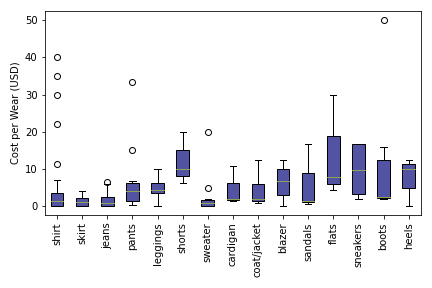

Wardrobe Cost
Cost per Wear by Category
I evaluate based on cost per wear rather than initial cost becuase I find that this is a better measure of how much value I receive from an item. Something can seem fairly cheap, but, if I never wear it, it may not have provided with me as much value as an item that was initially expensive but is worn frequently.
Cost per wear for each item is calculated using the following formula
(initial cost + repair costs + tailoring costs)/total wears
Some categories seem to cost more per wear than others. For example, flats and shorts cost more than sweaters and jeans which makes sense because I wear rarely wear shorts while I wear jeans almost daily. Most of the outliers can be explained by the fact that these are relatively recently acquired items.
For this analysis, cost per wear was only calculated based on tracked wear counts (2019-2020), but it is important to note that many of these items are much older and thus have lower costs per wear. In the future, it would be interesting to estimate costs per wear by extrapolating current wear data although this anlaysis would be limited by my memory (acquisition dates before 2019 are all estimates).
Visualizations